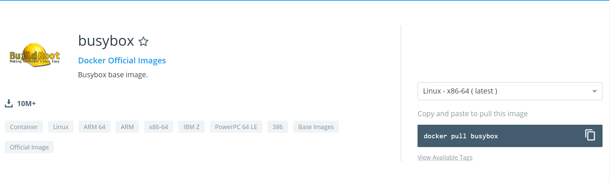

前言
本文假设读者都是开发者，并熟悉 Linux 环境，所以就不介绍基础的技术概念了。命令行环境以 Linux 示例。
内容概要
本文包括以下内容:
- 在 CentOS7 下安装 Docker
- 制作 Docker 镜像
- 通过 Docker 部署服务
扩展阅读
对于已经熟悉的 Docker 的朋友，推荐阅读使用 Docker + Jenkins 构建 CI/CD 环境。
阅读完这篇文章，你将可以达到以下的效果：
| 只通过一个 commit(GitHub)，将应用通过 Docker 容器部署出来。
这其中包括以下操作:
- 检出代码
- 运行测试
- 编译代码
- 对代码进行 SonarQube (代码质量管理工具)分析
- 创建 Docker 镜像
- 推送镜像到Docker Hub
- 拉取并运行镜像
简单地说，就是大概是神兵结合平安CaaS后台所做的事情。
正文
通过 Docker 启动一个简单的 web 应用
在 CentOS7 下安装 Docker
Docker 现在有2个版本，分别是 Docker CE 和 Docker EE。这2个版本都是由官方维护的，EE 是商业版,由官方提供认证了的OS、云平台层的技术支持，并提供 LDAP、Active Directory之类的认证（鉴权）系统技术支持以及镜像认证等安全方面的支持。
本文以 Docker CE（社区版）为例。
OS 前提条件
要安装 Docker CE，你需要一个正在维护版本的 CentOS 7。归档版本没有得到测试以及支持。
centos-extras仓库需要被启用。默认情况下是启用的。overlay2存储驱动是推荐使用的。删除旧版本
旧版本的 Docker 被称为
docker或docker-engine。如果它们有被安装，先删除它们，包括相关联的依赖组建。(sudo) yum remove docker \ docker-client \ docker-client-latest \ docker-common \ docker-latest \ docker-latest-logrotate \ docker-logrotate \ docker-engine如果
yum报告说没有安装这些，也是OK的。/var/lib/docker当中的内容包括镜像、容器、卷、网络等默认内容。Docker CE 安装包现在被称为docker-ce。安装 Docker CE
安装 Docker CE 通常有3中方法：
通过包管理工具仓库安装
4.1 配置软件源仓库
- 需要预先安装依赖包。
yum-utils提供yum-config-manager工具，然后device-mapper-persistent-data和lvm2被devicemapper存储驱动依赖。(sudo) yum install -y yum-utils \ device-mapper-persistent-data \ lvm2 - 使用下列命令配置稳定仓库源。
(sudo) yum-config-manager \ --add-repo \ https://download.docker.com/linux/centos/docker-ce.repo
4.2 安装 Docker CE
(sudo) yum install docker-ce docker-ce-cli containerd.io如果命令行提示说需要接受GPG key，确认fingerprint与下列相同。
060A 61C5 1B55 8A7F 742B 77AA C52F EB6B 621E 9F35，如果相同，接受它。4.3 (可选项)安装指定版本的Docker CE。
排序列出仓库源中的可用版本
例如:$ yum list docker-ce --showduplicates | sort -r docker-ce.x86_64 3:18.09.1-3.el7 docker-ce-stable docker-ce.x86_64 3:18.09.0-3.el7 docker-ce-stable docker-ce.x86_64 18.06.1.ce-3.el7 docker-ce-stable docker-ce.x86_64 18.06.0.ce-3.el7 docker-ce-stable通过有效的软件包全名来安装制定版本
包的全名由2部分组成。分别是 (1)包名 (
docker-ce)加上从第1个冒号(:)后开头，直到第1个连字符(-)结束的 (2)版本字符串 (第2列)，中间由连字符(-)相连。例如:
docker-ce-18.09.1。(sudo) yum install docker-ce-<VERSION_STRING> docker-ce-cli-<VERSION_STRING> containerd.io完成以上步骤之后，Docker已经安装，系统中创建了一个
docker组，但没有用户被添加到这个组。
4.4 启动 Docker
(sudo) systemctl start docker4.5 验证 Docker CE 安装正常，通过运行
hello-world镜像。(sudo) docker run hello-world- 需要预先安装依赖包。
制作 Docker 镜像
关于docker命令可以参考网友分享的docker cheat sheet(有中文版)。
搜索可用的docker镜像
使用docker最简单的方式莫过于从现有的容器镜像开始。Docker官方网站专门有一个页面来存储所有可用的镜像，网址是：
https://index.docker.io。你可以通过浏览这个网页来查找你想要使用的镜像，或者使用命令行的工具来检索。
拉取镜像
(sudo) docker pull <IMAGE_NAME/IMAGE_ID>$ docker images REPOSITORY TAG IMAGE ID CREATED SIZE hello-world latest fce289e99eb9 3 months ago 1.84kB kindest/node v1.12.2 58eadc0ca522 5 months ago 1.5GB k8s.gcr.io/kube-proxy-amd64 v1.11.3 be5a6e1ecfa6 7 months ago 97.8MB k8s.gcr.io/kube-controller-manager-amd64 v1.11.3 a710d6a92519 7 months ago 155MB k8s.gcr.io/kube-apiserver-amd64 v1.11.3 3de571b6587b 7 months ago 187MB k8s.gcr.io/kube-scheduler-amd64 v1.11.3 ca1f38854f74 7 months ago 56.8MB k8s.gcr.io/coredns 1.1.3 b3b94275d97c 10 months ago 45.6MB k8s.gcr.io/etcd-amd64 3.2.18 b8df3b177be2 12 months ago 219MB k8s.gcr.io/pause 3.1 da86e6ba6ca1 15 months ago 742kB $ docker pull busybox Using default tag: latest latest: Pulling from library/busybox fc1a6b909f82: Pull complete Digest: sha256:954e1f01e80ce09d0887ff6ea10b13a812cb01932a0781d6b0cc23f743a874fd Status: Downloaded newer image for busybox:latest $ docker images REPOSITORY TAG IMAGE ID CREATED SIZE busybox latest af2f74c517aa 5 days ago 1.2MB hello-world latest fce289e99eb9 3 months ago 1.84kB kindest/node v1.12.2 58eadc0ca522 5 months ago 1.5GB k8s.gcr.io/kube-proxy-amd64 v1.11.3 be5a6e1ecfa6 7 months ago 97.8MB k8s.gcr.io/kube-scheduler-amd64 v1.11.3 ca1f38854f74 7 months ago 56.8MB k8s.gcr.io/kube-apiserver-amd64 v1.11.3 3de571b6587b 7 months ago 187MB k8s.gcr.io/kube-controller-manager-amd64 v1.11.3 a710d6a92519 7 months ago 155MB k8s.gcr.io/coredns 1.1.3 b3b94275d97c 10 months ago 45.6MB k8s.gcr.io/etcd-amd64 3.2.18 b8df3b177be2 12 months ago 219MB k8s.gcr.io/pause 3.1 da86e6ba6ca1 15 months ago 742kB制作 Docker 镜像
语法:
docker build [OPTIONS] PATH | URL | -docker build命令从Dockerfile和一个”上下文”制作镜像。一个build的上下文是一个特定位置下的文件的集合，这个位置可以通过PATH或URL来指定。
换句话说，你可以通过git仓库指定”上下文”。3.1 编写 Dockerfile搜索可用的docker镜像
我用go语言写了一个简单的web应用。
现在我基于基础镜像busybox来制作我自己的web应用镜像，取名为”go-server-9860”。- 编写 Dockerfile
Dockerfile可以参照此处。
3.2 创建镜像
使用
docker build命令通过指定URL来创建镜像。例子:
docker build -t go-server-9860 https://github.com/aruruka/hello-world.git#master:docker_basis3.3 运行镜像
以后台方式启动一个容器:
docker run -d --name go-server-9860 -p 127.0.0.1:9860:9860/tcp --rm go-server进入一个容器并分配一个终端:
docker exec -it go-server-9860 sh给一个容器发送
SIGKILL信号:docker kill go-server-9860- 编写 Dockerfile
访问刚刚部署的web服务
# 查看正在云从的容器:
docker ps | sed -n '1p;/go-server/Ip
# 测试端口是否在宿主机上监听
telnet 127.0.0.1 9860
# 访问服务
curl http://127.0.0.1:9860/world